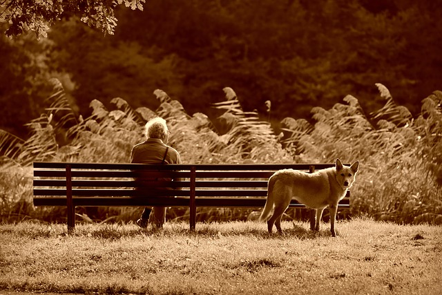

No matter whether they're still a puppy.

Or fully grown.

They're always right by our side.
This page was created to show the amount of love and support dogs show throughout our lives. Whether we have them as stay at home companians, or people use them to help with their dissabilities. Dogs stay loyal and stay right by our side through thick and thin.